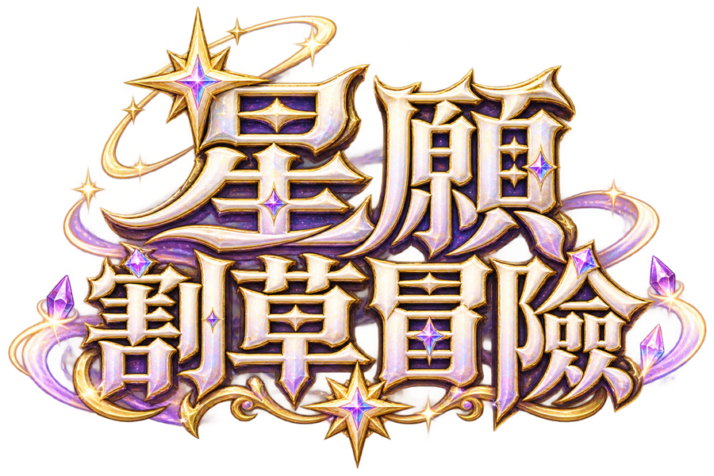

旅團遠征 基礎試玩版0 星光
CXQ ORIGINAL · 十位旅伴
露緹
星願魔法師
02 / 10
CHOOSE YOUR DESTINATION
5 座地圖 · 30 種怪物這次，要前往哪裡？
不同地圖、不同敵群與素材。選擇你想挑戰的冒險。
挑戰強度
標準戰鬥強度。所有地圖皆可選擇，地圖特色與強度分開。

旅團遠征 基礎試玩版星願魔法師
不同地圖、不同敵群與素材。選擇你想挑戰的冒險。
標準戰鬥強度。所有地圖皆可選擇，地圖特色與強度分開。